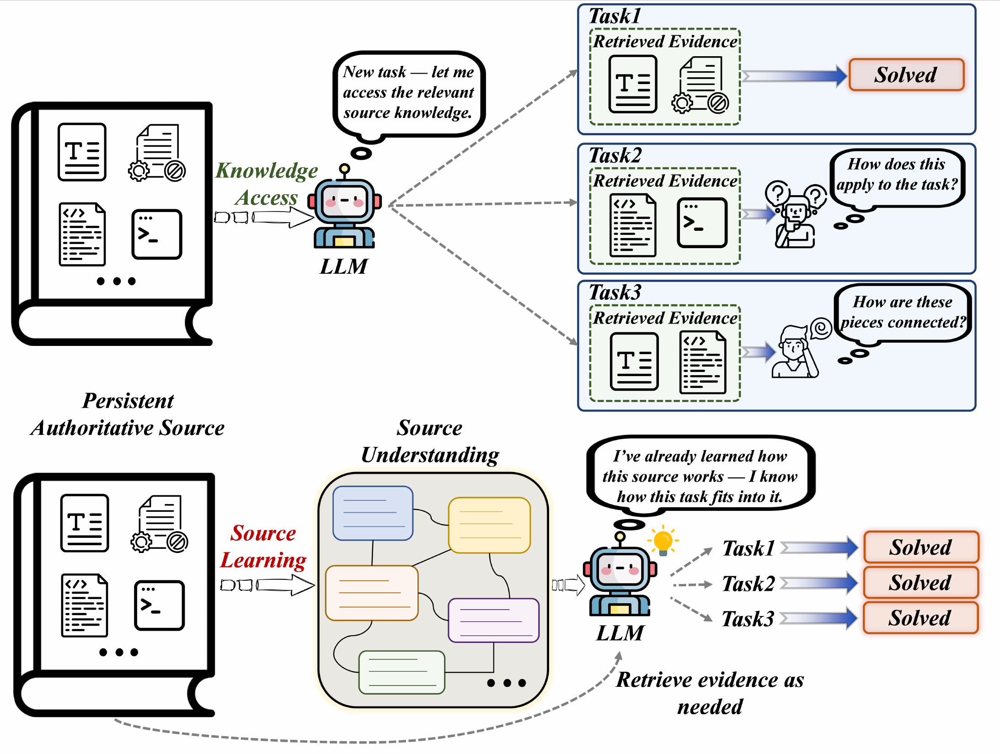
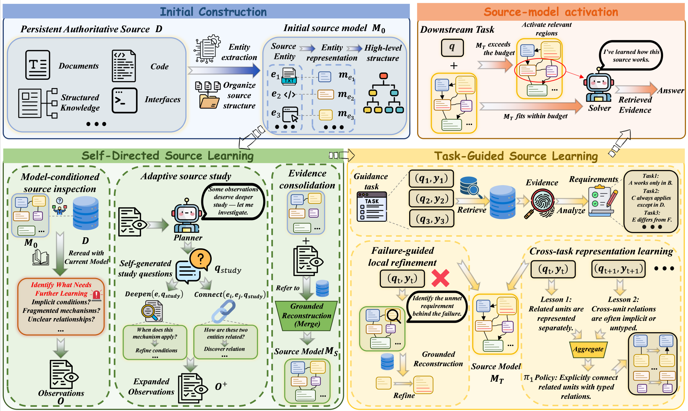
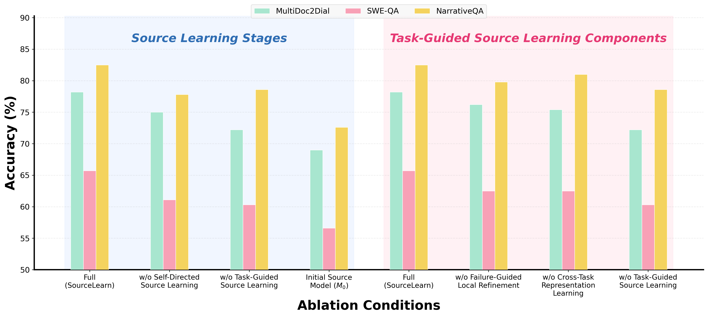
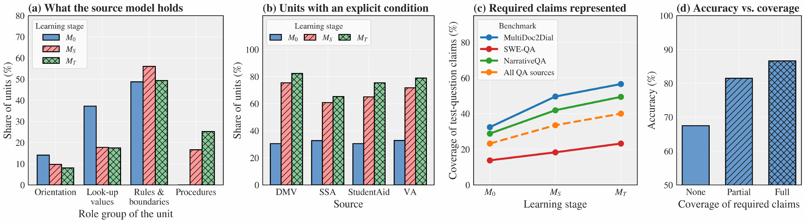
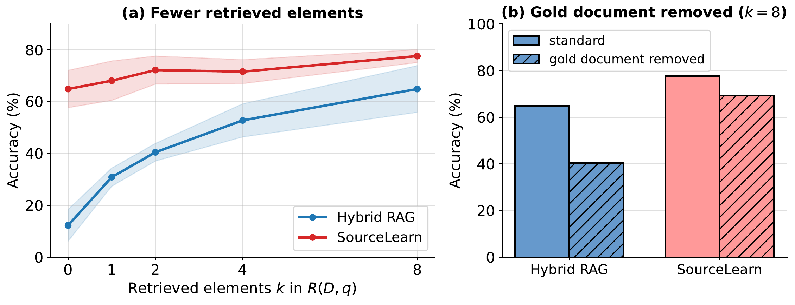

Large language model (LLM) agents increasingly rely on persistent external sources to solve sequences of knowledge-intensive tasks. Existing methods improve how source content is accessed and organized, while agent-memory systems preserve reusable knowledge from prior interactions, but repeated use of the same source is still largely treated as repeated access rather than an opportunity to progressively improve understanding of that source. We study source learning: developing reusable source-specific competence over a persistent authoritative source. We represent this competence with a persistent source model that captures reusable understanding of the source, including how its knowledge is structured, interpreted, and applied. To construct and progressively refine such models, we propose SourceLearn, which combines two complementary learning mechanisms. Self-Directed Source Learning identifies what remains incompletely understood and adaptively revisits the source, while Task-Guided Source Learning uses downstream experience to reveal local representational gaps and recurring needs in how source knowledge should be organized. In both cases, learning signals determine what should be reconsidered, while persistent updates are reconstructed from the authoritative source. Across five benchmarks and three LLM backends, SourceLearn achieves the best performance in 13 of 15 settings, with gains of up to 22.6 points over Hybrid RAG and substantial overall improvements over static source representations and experience-based memory baselines.
A source is an identifiable body of external knowledge: a document collection, a code repository, API documentation. Retrieval, long-context modeling and structured source representations make such sources easier to access, and agent memory makes past experience easier to reuse, but they optimize different objects. When many tasks depend on the same source, an additional opportunity arises: the agent can use prior study and task experience to improve how it represents and uses that source. We call this process source learning; its goal is source-specific competence, reusable understanding of how a source's knowledge is structured, interpreted and applied, while the source itself remains the authority for factual content.

Problem illustration. Knowledge access retrieves task-relevant evidence from the source but does not necessarily accumulate reusable source understanding across tasks, so the model repeatedly reconstructs how evidence should be interpreted or combined (left). Source learning progressively develops reusable source understanding through continued study and use, while retaining direct access to the authoritative source (right).
What source knowledge should be learned before future tasks are known? A source contains far more than should be retained, and a one-pass representation may miss connections distributed across the source or conditions that are only implicit.
How can task-specific feedback improve source-specific competence beyond the task that produced it? Retaining the observed answer or correction risks learning the task rather than the source.
An explicit, persistent and revisable state M of what has been learned about the source. At task time it complements direct access: ŷ = F(q, R(D,q), M).
SourceLearn maintains a persistent source model over the authoritative source D and develops it in three steps. Every stage follows one principle: learning signals determine what should be reconsidered, while persistent knowledge is reconstructed from the source. A reconstruction is committed only when the proposed content is supported by source evidence and previously supported meaning is preserved; observations themselves are never copied into persistent memory.

Overview of SourceLearn. Initial Construction builds a provisional source model M0 from the authoritative source D. Self-Directed Source Learning deepens and connects source understanding through adaptive study, producing MS. Task-Guided Source Learning uses guidance-task failures and recurring representation needs to further refine the model into MT. At inference time, Source-Model Activation combines relevant source-model context with directly retrieved evidence for downstream tasks.
Source-aware, entity-centered reading under a generic modeling instruction Π0 builds a provisional model M0 = Construct(D): major entities with their properties, mechanisms, governing conditions, procedures, exceptions, distinctions and relations, while easily retrievable low-level details stay in the source. Large sources are first partitioned into coherent regions.
An Inspect–Study–Consolidate cycle. Inspection rereads each entity against its current representation and records what the model still fails to explain; an adaptive planner chooses Deepen and Connect study actions with focused study questions; consolidation reconstructs the affected regions from the source. A read-many, write-once pattern that yields MS.
Guidance tasks reveal what the source model lacks. Failure-guided local refinement rereads the implicated source region when a required claim is missing; cross-task representation learning aggregates recurring representation lessons into a policy Π1 and recalibrates the whole model under it, producing MT. Neither the answer nor its evidence is stored.
Five benchmarks spanning document QA (MultiDoc2Dial, NarrativeQA), code QA (SWE-QA), tool use (APIBench) and interactive environments (AppWorld); three backbones (GPT-5.6-Luna, gpt-oss-120b, DeepSeek-V4.1-Flash), each performing every LLM operation of every method. Guidance and test tasks are disjoint. SourceLearn is compared with task-local retrieval (Hybrid RAG), persistent source representations (RAPTOR, HippoRAG 2) and experience-based memory (AWM), and receives the same retrieved evidence as Hybrid RAG together with the activated source model.
| Backbone | Method | Document QA | Code QA | Tool Use | Interactive Env. | |
|---|---|---|---|---|---|---|
| MultiDoc2Dial | NarrativeQA | SWE-QA | APIBench | AppWorld | ||
| GPT-5.6-Luna | Hybrid RAG | 64.9 | 66.0 | 56.9 | 47.8 | 72.0 |
| RAPTOR | 71.2+6.3 | 68.1+2.1 | 50.8−6.1 | 61.9+14.1 | 75.6+3.6 | |
| HippoRAG 2 | 66.3+1.4 | 66.6+0.6 | 62.7+5.8 | 55.2+7.4 | 77.4+5.4 | |
| AWM | 65.1+0.2 | 62.1−3.9 | 56.7−0.2 | 62.8+15.0 | 66.7−5.3 | |
| SourceLearn | 77.6+12.7 | 80.2+14.2 | 69.5+12.6 | 70.4+22.6 | 81.5+9.5 | |
| gpt-oss-120b | Hybrid RAG | 64.5 | 45.6 | 52.5 | 60.3 | 30.4 |
| RAPTOR | 61.5−3.0 | 40.4−5.2 | 32.8−19.7 | 54.7−5.6 | 26.8−3.6 | |
| HippoRAG 2 | 66.7+2.2 | 45.7+0.1 | 56.7+4.2 | 56.0−4.3 | 33.9+3.5 | |
| AWM | 64.1−0.4 | 43.2−2.4 | 51.5−1.0 | 63.2+2.9 | 28.6−1.8 | |
| SourceLearn | 68.7+4.2 | 56.7+11.1 | 53.4+0.9 | 71.8+11.5 | 27.4−3.0 | |
| DeepSeek-V4.1-Flash | Hybrid RAG | 63.3 | 64.2 | 45.9 | 67.1 | 83.9 |
| RAPTOR | 73.2+9.9 | 60.4−3.8 | 36.8−9.1 | 69.3+2.2 | 88.7+4.8 | |
| HippoRAG 2 | 67.3+4.0 | 62.0−2.2 | 55.7+9.8 | 69.6+2.5 | 86.9+3.0 | |
| AWM | 63.7+0.4 | 61.4−2.8 | 47.4+1.5 | 70.8+3.7 | 83.9+0.0 | |
| SourceLearn | 81.3+18.0 | 76.2+12.0 | 61.6+15.7 | 82.2+15.1 | 89.9+6.0 | |
Task performance (%) with changes relative to Hybrid RAG as subscripts. Bold: best. Underlined: second-best. QA answers are judged by GPT-5.6-Luna for every method and backbone; APIBench and AppWorld use their official evaluators. The gains exceed 10 points on four of the five benchmarks with both GPT-5.6-Luna and DeepSeek-V4.1-Flash.
Beyond headline accuracy, we ask what each learning mechanism contributes (ablation), what the source model comes to represent (beyond compression), and how it behaves when task-time retrieval is incomplete (robustness).

Ablation with GPT-5.6-Luna on two sources of each QA benchmark: the source learning stages (left) and the two pathways of Task-Guided Source Learning (right). Each bar reports answer accuracy (%).
The full model MT is the most accurate on all three benchmarks. Omitting either Self-Directed or Task-Guided Source Learning lowers accuracy, and the initial model M0 is the lowest.
Removing either failure-guided local refinement or cross-task representation learning lowers accuracy on every benchmark; removing both recovers MS and lowers it further. Concrete failures repair local gaps, while recurring representation lessons change how the whole model represents the source.
Is the source model merely a compressed summary of the source? From M0 to MS and MT, the representation shifts away from isolated look-up content toward structured rules and procedures, and units with explicit applicability conditions rise from roughly 30% to 65–82% across sources. The share of source claims required by test questions that the model represents rises from 23.2% to 40.0%, and this coverage is associated with downstream success: accuracy rises from 67.5% when none of the required claims are represented to 86.6% when all are.

From M0 to MS to MT, source learning (a) changes what the model represents, (b) makes conditions more explicit, (c) increases coverage of source knowledge required by future tasks, and (d) higher coverage is associated with higher answer accuracy.

Robustness to missing retrieved evidence on MultiDoc2Dial with GPT-5.6-Luna. (a) Accuracy as the number of retrieved elements decreases; at k = 0, SourceLearn uses only the activated source model. (b) Accuracy when the gold document is removed from retrieval at k = 8.
With no retrieved evidence, the source model alone performs comparably to Hybrid RAG with all eight retrieved elements, and SourceLearn degrades substantially more slowly as retrieval is reduced. Removing the gold document lowers Hybrid RAG by about 25 points but SourceLearn by only about 8.
Over Hybrid RAG, SourceLearn gains +14.9 points on test questions whose source region overlaps a guidance task and +12.1 on regions no guidance task touched, so the benefit extends to new parts of the same source.
Auditing sampled units against their cited evidence, direct contradictions remain rare (≤1%) and 93–100% of claims dropped during rewriting remain represented; some task-guided units are only partially supported, which is why the source stays directly accessible at task time.
@article{fu2026knowledge,
title={From Knowledge Access to Source Learning: Developing Source-Specific Competence},
author={Fu, Lucheng and Xia, Kejing and Wang, Yiyang and Jin, Yiqiao and He, Jinjin and Yang, Xiyuan and Liu, Haoxin and Yu, Ye and Jin, Haibo and Xiao, Yijia and others},
journal={arXiv preprint arXiv:2610.02150},
year={2026}
}